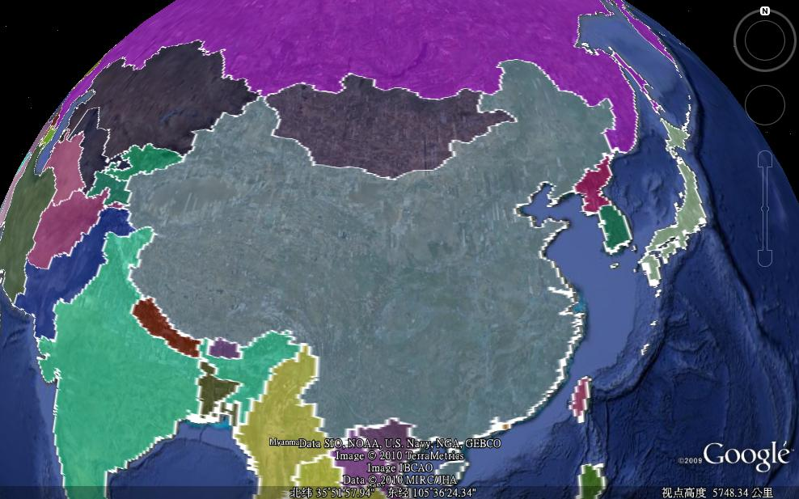
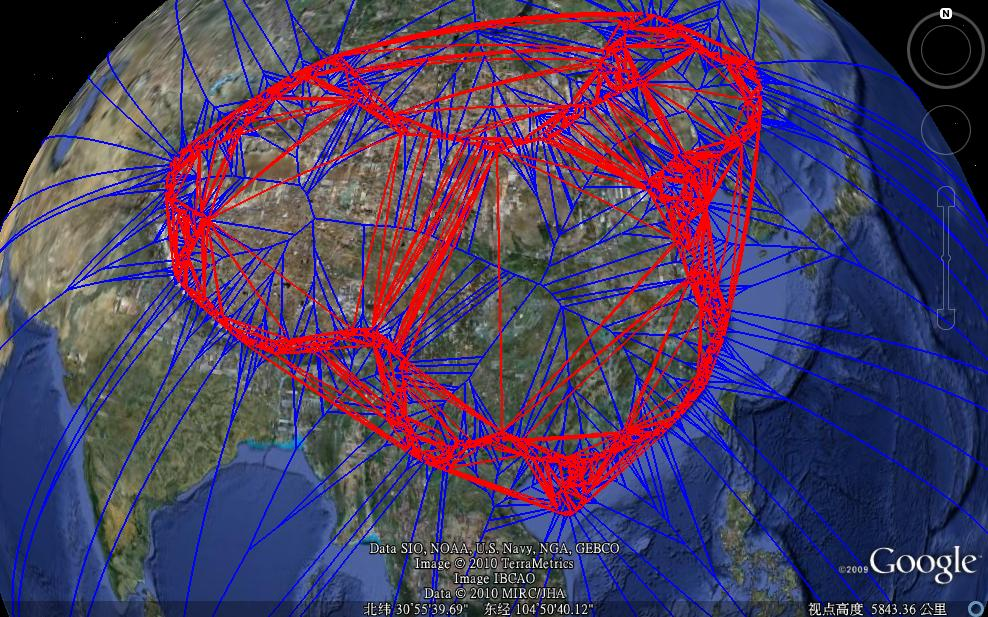
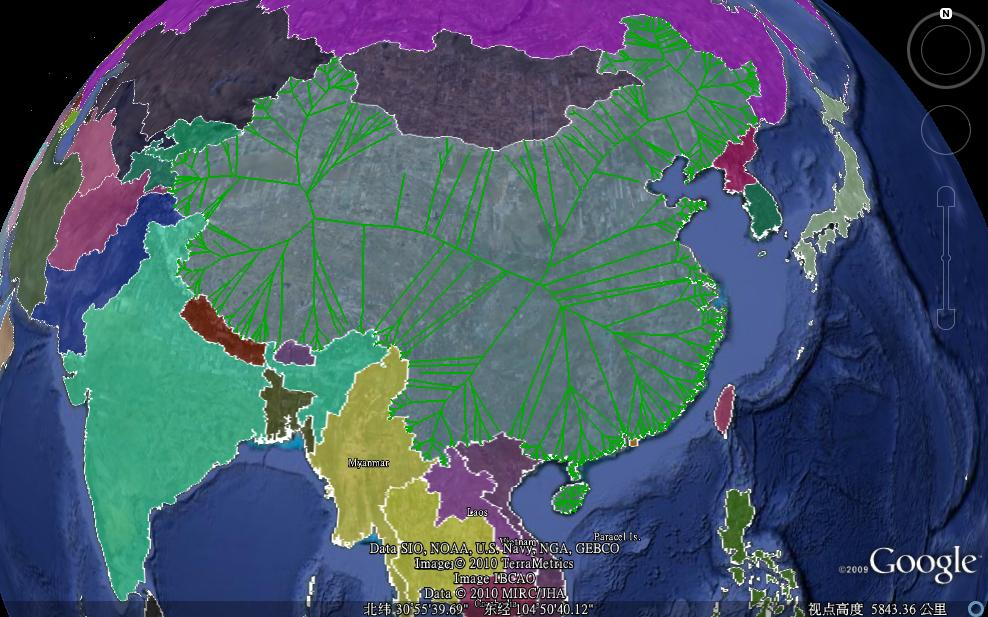

考虑这样一个问题：在中国，哪里是离国境最远的地方？经过一番思考，我觉得用球面上的Voronoi图来解这个问题是可行的。（可能有更好的办法，望告知。）
计算球面上的Delaunay三角和Voronoi图是通过计算三维空间中的凸包来实现的，参见相关文章（推荐链接1、链接2）。我使用的工具是CGAL。而国境线的数据来自http://www.gelib.com/world-borders.htm。世界各国的数据都有，但是较为简略。其中中国的部分只包括中国大陆，港澳台地区各自单独列出。下图就是国境线数据：

有了数据以及方便的工具，剩下的事情其实是极简单的。我一开始还想自己写个程序来显示结果，后来发现把结果写为KML文件用谷歌地球来显示要方便多了。将各个数据点由经纬度值转为分布在单位球上的三维点。计算这些点的凸包。不失一般性，假定凸包表面的三角面的法矢指向凸包的外部，那么将法矢朝向球的外部的三角面投影到球面上，便得到了球面上的Delaunay三角。而三角面的法矢单位化后，从球心按此矢量偏移，可得到相应Delaunay三角的对偶顶点。遍历凸包表面上的边，将相邻三角面对应的的对偶顶点用以球心为圆心的圆弧连接，就生成了球面上的Voronoi图。如下图：

还可由此计算medial axis:

回到开始时的问题——离国境最远的地方。 也就是Delaunay三角中外接圆最大的所对应的对偶顶点。如果不分国内国外，那么这点在智利以西的太平洋上，西经76.1677°,南纬40.7443°，距离约为8723km（按地球半径等于6371km计算，下同）。要得到在中国国内离国境最远的地方，那么只考虑在国境内的Delaunay三角即可。该点为东经108.173°，北纬32.479°，在陕西省汉中市镇巴县，距离约为1050km。
以上的计算由于使用的数据较简略，所以可能并不准确，不过方法应该是正确的。
最后附上使用Meshlab做 的，和球面上Voronoi图相关的一个漂亮例子（需翻防火墙）。
下载链接（包含以上全部结果，不包括国境线数据，解压后用谷歌地球打开）